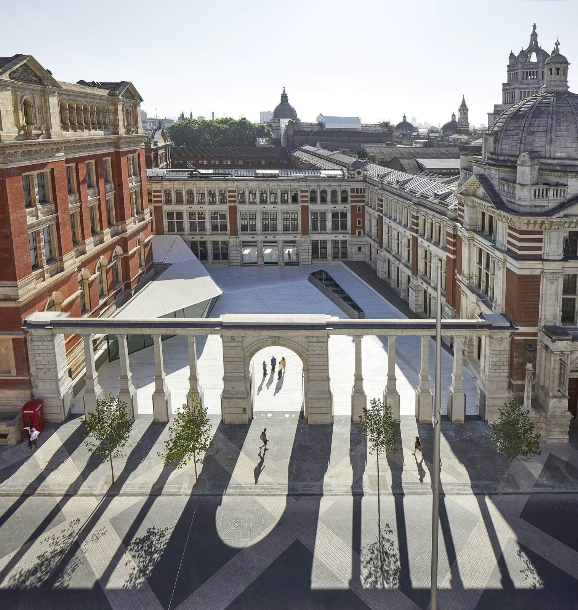

ORNAMENTAL
Media: EEG headset, brain-data-driven algorithmic visualisations, genetic algorithm, Processing code, and networked monitors Dimensions: 3m x 2m X 1m Year: 2019 Exhibition: The Victoria & Albert Museum, The Science + Industry Museum, Watermans Art Centre, ACM SIGGRAPH, Leonardo Journal MIT Press Support: Computational Artist Residency with the V&A Museum and Goldsmiths Department of Computing
Ornamental
“Information is not a disembodied abstract entity; it is always tied to a physical representation. It is represented by engraving on a stone tablet, a spin, a charge, a hole in a punched card, a mark on paper, or some other equivalent. This ties the handling of information to all the possibilities and restrictions of our real physical word, its laws of physics and its storehouse of available parts.” - Rolf Landauer, The Physical Nature of Information
Physical Ideas
In 1948, Claude Shannon’s A Mathematical Theory of Information laid the groundwork for the digital age. It defined the term information , introduced the unit the bit , and revolutionized how we communicate.
Shannon’s work gives us physical parameters to define an often perceivably abstract entity: information. It’s a seemingly strange and wonderful truth in the digital age that information is physical- where you are often lead to believe that information lives in the ether of clouds. Information encoded in the form of an individual’s idea therefore also has physical dimensions - despite some philosophers of information cloudily suggesting a possible immateriality and others scientifically refuting those suggestions.
In the Digital Age, communication changed from limiting who gets to speak (radio) to limiting who gets to be heard (internet) requiring new forms of searching and sorting masses of information. This allows a multitude of ideas to coexist in real time like never before. It’s no accident that physical ideas are described as going ‘viral’. Ideas, or memes, mutate and evolve online (and elsewhere) like genes forming and reforming the biological tree of life in a feedback system.
An idea. Resilient, highly contagious. Once an idea takes hold of your mind it is almost impossible to eradicate. The Digital Age is a memetic pool of contending physical ideas. The microcosm of one’s mind leads to the mesocosm of debate leading to the macrocosm of the globe. Evolution defined in terms of emergent ideologies that are spread and encoded across physical boundary lines.
In the case of Ornamental , the brain scanning EEG reader serves as a symbolic data-extracting channel from one’s mind. More specifically, the extraction of an idea in it most raw and often incomplete form on a noisy information channel. The idea takes the form of binary trees or L-systems that are the fundamental data structure of mapping analog signals to digital encodings. The scanned ideas mutate the binary trees as initial seed data for a thought that is in a constant state of mutation and flux. It is easy to classify an idea as a finalised stagnant thing, but Ornamental plays with the possibility of seeing cognitive ideas as temporal physical living entities, transferring form from brain to keystroke to pixel to paper to iris to brain, from host to host to host.
Technical
EEG brain data serves as ‘genotype’ seed data generating the ‘phenotype’ visual properties and behavior of mutating L-system forms. The data controls properties like branch segment length, segment rotation, behavior erosion between L-system layers, and grayscale color. Once scanned, these digital ideas occupy a gestating idea archive before entering a global systems to colonize minds. The global system is composed of attractors, representing individual minds, in 3D space. When the global system is detected as dormant, a scanned idea takes on the behavior of the space colonization algorithm translating itself into the global system in ‘analog’ physical form of open minds.
